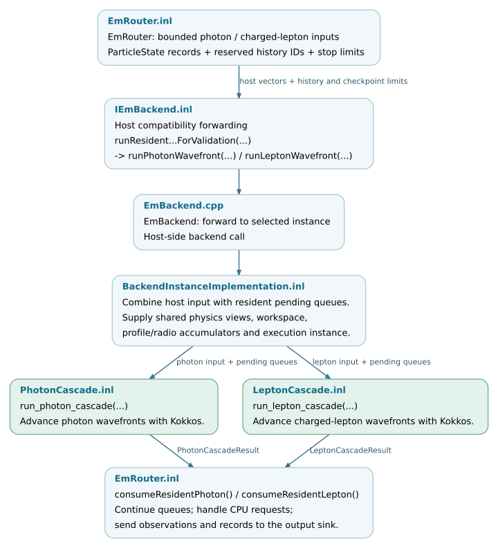

Batch execution and CPU return paths
EmRouter::advanceOneWavefrontAndReturn(stack) submits staged particles to
the resident EM backend and processes its results. A single call can advance
several transport wavefronts. Its return value counts CPU returns and
reaction-completion notifications that require node refresh; it is not a
particle-step or kernel-launch count. Transport steps and generated particles
are recorded separately in the result objects and backend statistics.
A checkpoint returns control to the caller while preserving unfinished work in result records or resident queues. The caller can then resume that work in a later batch.
Dispatch thresholds and capacity
The standard router first checks whether a small staged batch should receive
further scalar steps. For backend dispatch, it limits the input to the
advertised capacity, retains excess states in staged_ and separates photons
from charged leptons. It processes the photon batch before the charged-lepton
batch. Both calls can also consume states already held in resident queues.
Control |
Scheduling effect |
|---|---|
|
A particle-count threshold used by host dispatch and resident-loop checkpoints. The small-batch checkpoint applies after at least one wavefront; other limits can stop a call earlier. Forced dispatch and pending resident work allow execution below this threshold. |
Maximum resident input / photon / lepton sizes |
Capacity limits used to split host input and reserve workspace. An input that exceeds the limit remains queued for later processing. |
|
Limits on iterations and secondary-particle identities within one backend call. The standard router requests up to 16 photon wavefronts or 1024 lepton wavefronts. The lepton call supplies an exclusive upper bound on the reserved history-ID range. |
Static frontier import block |
Limits roots imported from a coordinator-produced file into an empty local stack. It is independent of the resident batch capacity; see Bounded frontier import. |
These controls govern the amount of particle work submitted or retained. Execution policies inside the transport kernels separately determine the mapping of particle indices to threads and thread blocks.
Backend interface and execution
The photon call in EmRouter.inl is:
372 auto result = backend_.runResidentPhotonCascadeForValidation(
373 photons, firstHistory, ResidentPhotonWavefronts, backend_.minimumBatchSize());
The charged-lepton call additionally supplies an exclusive history-ID limit:
405 auto result = backend_.runResidentLeptonCascadeForValidation(
406 leptons, historyRange.first_, 1024, historyRange.limit_,
407 backend_.minimumBatchSize());
The production router uses the compatibility methods whose names end in
ForValidation. IEmBackend.inl forwards them to runPhotonWavefront
and runLeptonWavefront. This interface dispatch executes on the host;
the particle kernels use the selected execution-space implementation.
EmBackend.cpp forwards to the selected backend instance.
BackendInstanceImplementation<TExecutionSpace> combines the supplied
std::vector<ParticleState> with pending resident input, supplies shared
physics views, workspaces and accumulators, and calls run_photon_cascade
or run_lepton_cascade. These templates use the selected Kokkos execution
space, including OpenMP, CUDA or HIP in a matching build.


The scheduling-to-transport boundary. Pending queues and shared workspaces
can remain in the execution space between calls. Open the SVG for source links.
SVG ·
Editable DOT source.

Result contracts
The calls return PhotonCascadeResult or LeptonCascadeResult by value.
consumeResidentPhoton and consumeResidentLepton handle these records:
Returned data |
Processing responsibility |
|---|---|
Remaining photons or leptons; generated particles |
Re-enter host staging when returned. With resident cross-species queues enabled, eligible generated particles stay in device-accessible storage instead; they must not also be imported as returned children. |
|
|
|
|
Lepton |
|
Step, final-state, projected-step and observation records |
Router recording functions pass the required contributions to
|
Checkpoint flags and counters |
Record small batches, workspace limits or exhausted history-ID ranges. They describe the end of this backend call, while the event can retain active particles elsewhere. |
CPU return policies
CPU returns serve distinct scheduling and physics requirements. Here a CPU return means resuming the native C8 scalar path, including when the backend uses OpenMP. The request type determines how the state is resumed.
Small-batch scalar expansion
When staging is below threshold and no resident work is pending, the router can return those particles to the C8 stack for further scalar steps. This path also requires that no deferred reaction batch or forced-dispatch condition takes precedence. A history/step marker directs the next scheduling attempt to the scalar stepper. A limit on consecutive expansion rounds and a check for unchanged particle state can trigger backend dispatch even below threshold.
Selected-interaction completion
The standard path stores requests accepted by
ProposalCpuFallbackHandler::canHandle(...) in deferredFallbackEvents_.
These requests preserve the particle state and the selected interaction.
After host staging and resident queues are drained, flushDeferredFallbacks
calls handle(stack, event) to complete the corresponding vertices on the
CPU. Eligible products can then return to the backend. A dedicated flag sends
the resulting staged batch to backend execution without another scalar
expansion cycle.
Other scalar returns
Generic fallback states, decay candidates and memory spills use separate history/step markers. A decay marker forces the next scalar step to execute the pending decay. Generic fallback and spill markers allow the particle to receive a scalar step before routing is reconsidered.
For a fallback request that no specified-reaction handler accepts, enabling
failOnUnexpectedFallback rejects reasons outside the permitted set:
UnsupportedParticle, UnsupportedMedium and UnsupportedGeometry.
Thus an unexpected numerical failure can abort the event, while a permitted
capability return continues through scalar transport. Small-batch expansion
is a scheduling decision independent of these reaction capabilities.
Maintenance requirements
Changes to a return record must update both its backend producer and router consumer. Each active particle needs exactly one continuation path, each selected interaction must complete once, and each output contribution must be accumulated once. Resident cross-species retention, host staging and CPU returns must preserve these invariants.